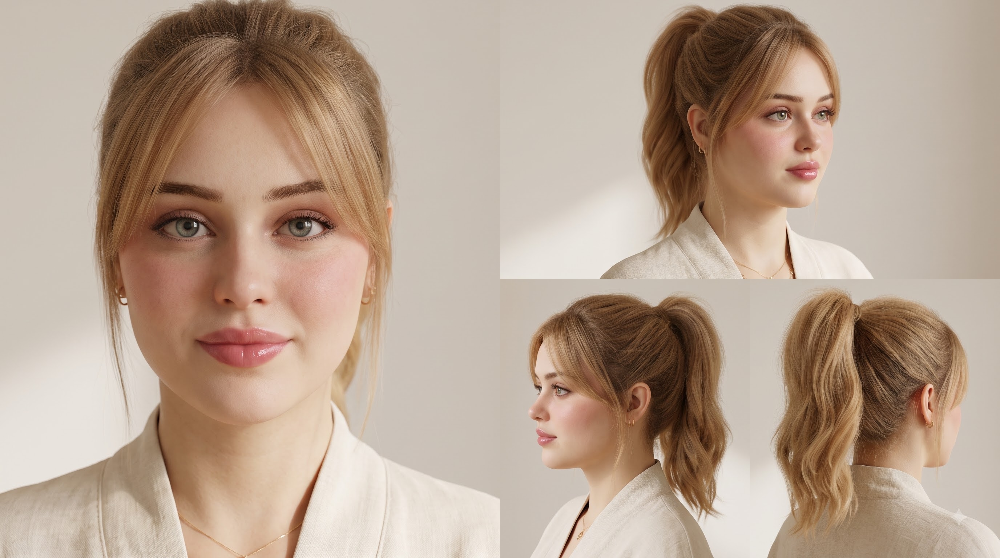
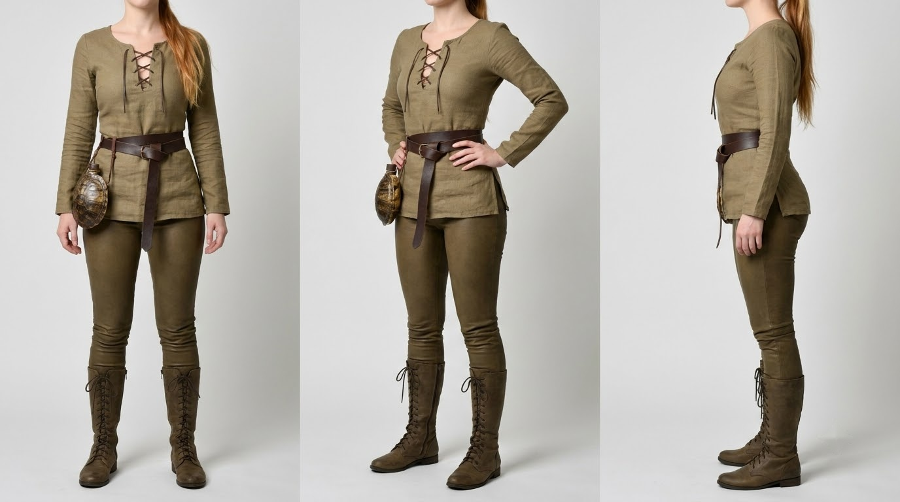
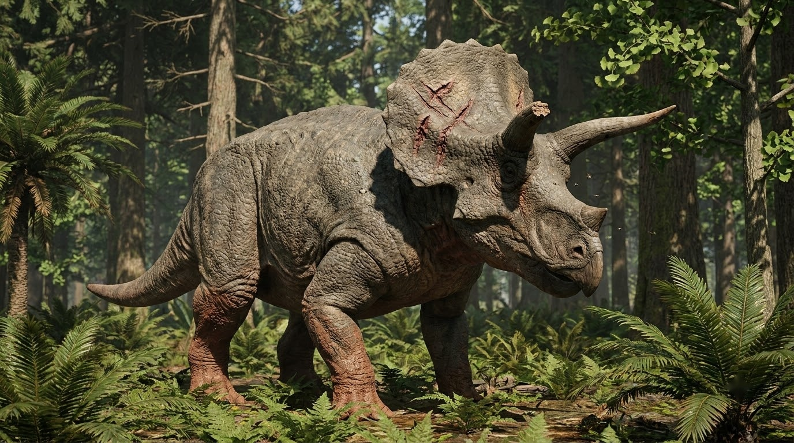
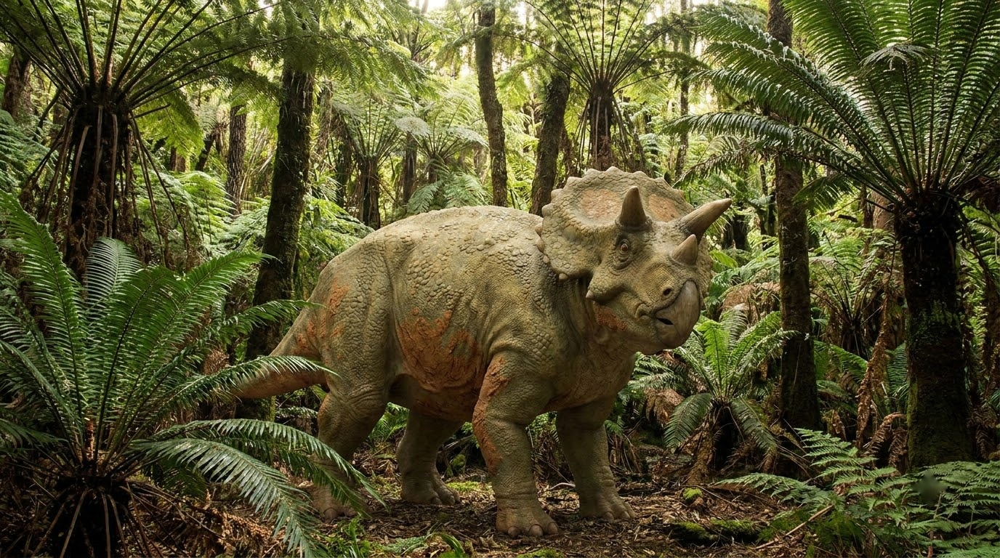
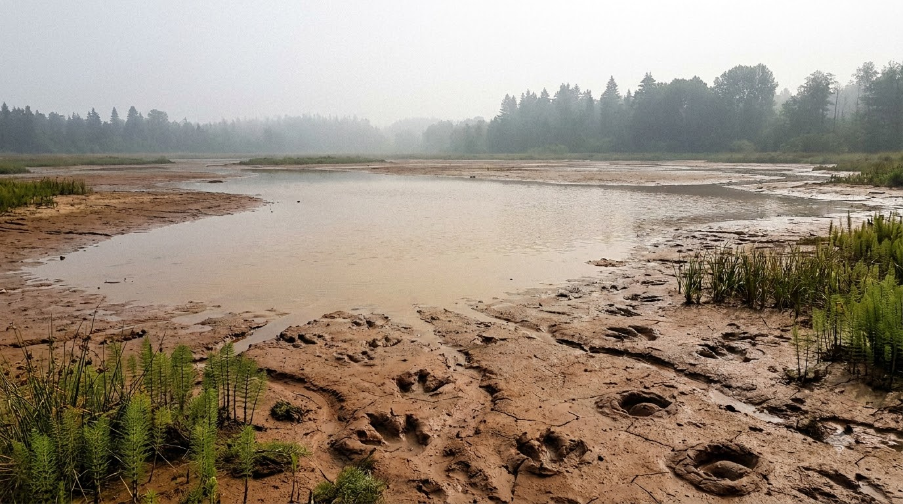
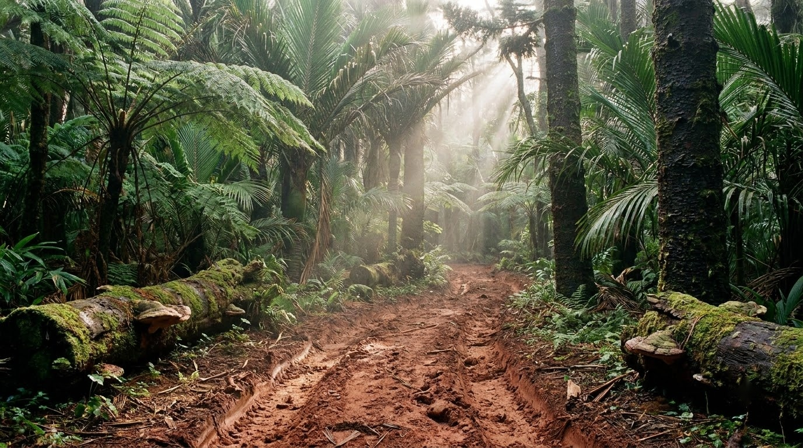

Pre-Production Gate • Rule 28 & 33 Compliant
Hell Creek 66 Ma — Bảng Duyệt Reference Assets (Start Frames)
1. Nhân Vật Chính & Vlogger (Ingredients Hierarchy)

FACE LOCKNora — Vlogger Face Reference
Chân dung cận cảnh khuôn mặt gốc: Nữ travel vlogger 23 tuổi người Việt, tóc đen dài buộc đuôi ngựa, da trắng tự nhiên, mắt sắc sảo biểu cảm.
UUID: 4d206c1b-b148-40d4-a52b-e72841c080df

CLEAN • BODY LOCKNora Body — Turnaround Sheet & Outfit
Chuẩn Turnaround 4 góc (Front, 3/4, Profile, Closeup): Dáng đồng hồ cát, ngực đầy đặn khe sâu cổ chữ V, mặc áo thun ôm xám tro dính bụi, sơ mi kaki buộc eo, quần cargo rêu ôm hông, đai field pouch, ủng trekking. Đã tẩy sạch watermark.
UUID: 37c9c041-8eab-4a8c-847c-f09957b78a42
2. Sinh Vật Tiền Sử (Standard 16:9 4-Angle Turnaround Sheets)

CLEAN • 16:9 SHEETBò Đực — Triceratops prorsus (Alpha Bull)
Bò đực đầu đàn 9 tấn: Diềm xương lớn có gai viền nhọn, sừng mũi ngắn dày chếch lên, 2 sừng trán dài 1m cong nhẹ, vảy da sừng lớn, sẹo chiến đấu, cơ bắp cuồn cuộn.
UUID: 4ca3dc4a-b799-41c2-988f-d3713f171806

CLEAN • 16:9 SHEETCon Non — Sub-adult Triceratops (Bê Cà Phơ)
Con non 2.5 tấn: Tỉ lệ cơ thể nhỏ nhắn, sừng trán ngắn hướng thẳng, sừng mũi nhỏ như cục u, vảy da mềm hơn, ánh mắt tò mò cảnh giác.
UUID: 2b5a6504-67e0-41a1-bc69-ff40c60ff413
CLEAN • 16:9 SHEET
T. rex — Tyrannosaurus rex (Apex Predator)
Khủng long bạo chúa 8 tấn dài 12m: Đầu to hộp sọ đồ sộ, mắt nhìn trực diện hai mắt (binocular vision), hàm răng hình quả chuối khỏe vô địch, cơ hàm khổng lồ, da vảy sẫm màu đốm ngụy trang.
UUID: 5b4f19b1-1d73-4823-8b6c-cb4f03d1f5fc
3. Bối Cảnh Địa Điểm (Architectural & Environmental Cleanliness)
 CLEAN • 16:9 LANDSCAPE
CLEAN • 16:9 LANDSCAPE
Hell Creek Bank — Bờ Sông Đầm Lầy (Act 1 Open)
Bãi bồi phù sa sông uốn khúc: Cát pha sỏi và bùn đen, dương xỉ rậm rạp, thân gỗ lũa hóa thạch, sương mù ẩm ướt lơ lửng, lá bạch quả và ngô đồng cổ rải rác.
UUID: 714a75c1-76e5-44d7-b60b-4da7db1579ad

CLEAN • 16:9 LANDSCAPEHell Creek Waterhole — Vũng Nước Rừng Rậm
Vũng nước sâu trong rừng lá rộng cổ đại: Nước màu trà sẫm phản chiếu bầu trời mây tầng thấp, rêu bám bờ đá phù sa, bách đầm lầy và cây họ cọ cổ đại vươn cao.
UUID: b3584e8d-534c-4d5e-8ba1-c9e96b2eb522

CLEAN • 16:9 LANDSCAPEHell Creek Trail — Lối Mòn Dấu Chân Bùn
Lối mòn lầy lội xuyên rừng cận nhiệt đới: Dấu chân 3 ngón khổng lồ của động vật ăn cỏ ngập nước, bùn nhão nén vệt xước móng vuốt, lá dương xỉ dập nát.
UUID: f4efad11-9020-4ebb-a52a-4b6a30b2b92b
Quy trình Tuân thủ Rule 27, 28 & 29:
Toàn bộ 8 assets đã được xử lý qua công cụ giải mã SynthID và xóa logo watermark (tools/remove_watermark_from_image.py), sau đó tải ngược lên Flow để sinh ra các Media ID UUID sạch tuyệt đối. Các UUID này đã được liên kết trực tiếp vào 19 Scene Structured Prompts của Act 1.
Toàn bộ 8 assets đã được xử lý qua công cụ giải mã SynthID và xóa logo watermark (tools/remove_watermark_from_image.py), sau đó tải ngược lên Flow để sinh ra các Media ID UUID sạch tuyệt đối. Các UUID này đã được liên kết trực tiếp vào 19 Scene Structured Prompts của Act 1.